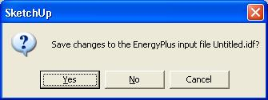
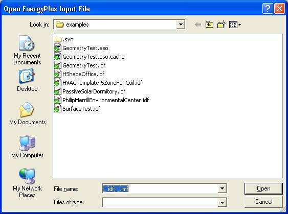
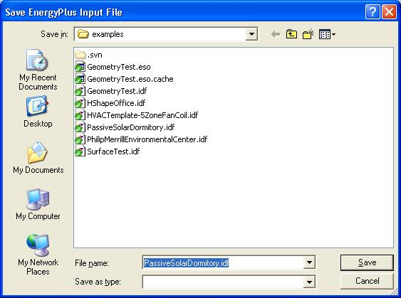
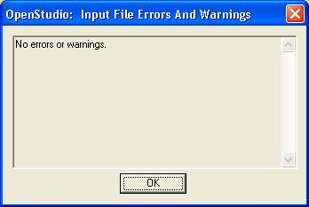

File Management and Errors
New EnergyPlus input file
Open EnergyPlus input file
Save EnergyPlus file (IDF)
SaveAs EnergyPlus data to a new file (IDF)
Show OpenStudio Errors and Warnings (IDF)
New EnergyPlus input file
A new IDF automatically opens when the Open Studio Plugin loads. You may also start with a clean IDF file. New IDF files are started from the “NewFileTemplate.idf” file in the OpenStudio install directory.
If you already drawn EnergyPlus objects, an alert will give you the option to save your current IDF or cancel the operation.

(Credit: David Goldwasser/NREL)
Back to Top
Open EnergyPlus input file
Navigate to the directory your IDF file is in, then select the file and click "Open". A known bug in the SketchUp API does not correctly filter files by extension, so you will see all files, not just IDF and IMF files. Before opening a large IDF, you can speed up the import by closing the Outliner and Object Information windows.

(Credit: David Goldwasser/NREL)
Back to Top
Save EnergyPlus file (IDF)
This saves your IDF file to its current location and overwrites its previously saved version.
Before you do this, consider whether you want to keep a raw clean copy of your file. If you do, consider "SaveAs" instead of "Save". Even before you make changes to a project with OpenStudio, the import process may have already altered some of your IDF objects.
The first time you save your IDF file you will be prompted for a file name.The default name that shows up in the save dialog is "Untitled.idf". When you change that name make sure you maintain the ".idf" file extension. This will assure that other applications will recognize the file as an EnergyPlus IDF file.
Back to Top
SaveAs EnergyPlus data to a new file (IDF)
You can save over your old file or give this a new file name, leaving your original file untouched. It may be a good idea to leave your raw IDF file as is and work on a copy. Choosing SaveAs prompts you for a new file name. Make sure the new name maintains the ".idf" file extension. This will assure that other applications will recognize the file as an EnergyPlus IDF file.

(Credit: David Goldwasser/NREL)
Back to Top
Show OpenStudio Errors and Warnings (IDF)
Any OpenStudio warnings will show up here. When an error occurs, this dialog should come up on its own, but the toolbar button gives you an option to open it manually to review any active errors. Many common geometry errors (upside floor or roof, inside out window, noncoplanar surfaces, etc.) are fixed automatically when you open the input file.

(Credit: David Goldwasser/NREL)
Back to Top
|